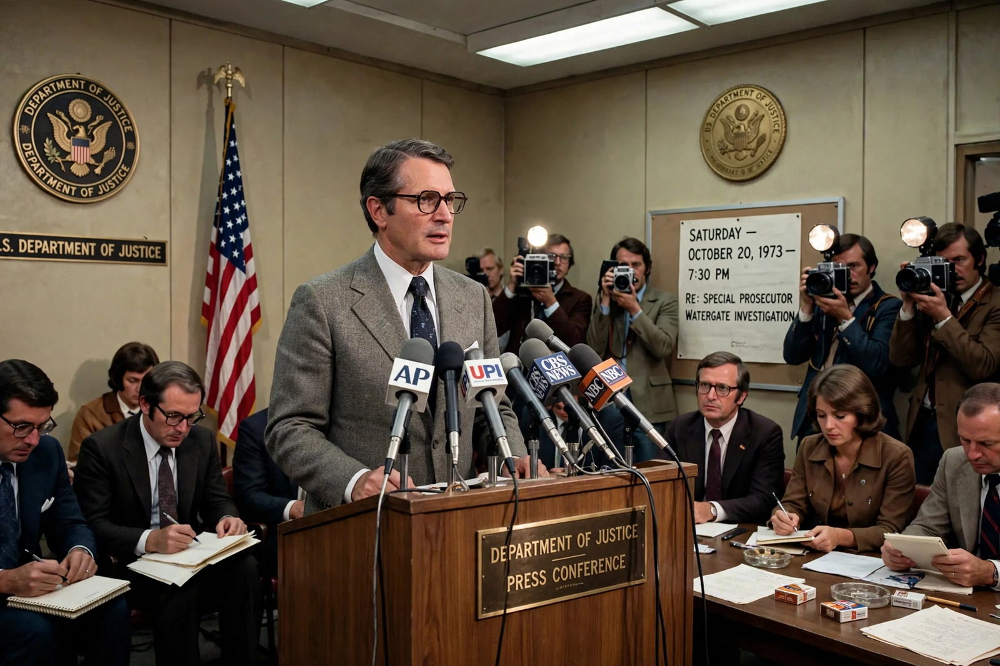

From Wikipedia, the free encyclopedia
| Saturday Night Massacre | |
|---|---|
 | |
| Date | 20 October 1973 |
| Context | Watergate scandal |
| Key figures | Richard Nixon; Archibald Cox; Elliot Richardson; William Ruckelshaus; Robert Bork |
| Outcome | Cox fired; Richardson and Ruckelshaus out; public backlash; new special prosecutor appointed |
The Saturday Night Massacre was a series of events on the evening of Saturday, 20 October 1973, during the Watergate scandal in the United States. President Richard Nixon ordered Attorney General Elliot Richardson to fire special prosecutor Archibald Cox, who had subpoenaed the secret White House tapes. Richardson refused and resigned. Nixon then ordered Deputy Attorney General William Ruckelshaus to fire Cox; Ruckelshaus also refused and resigned (Nixon's memoirs say he was fired). Solicitor General Robert Bork, as acting head of the Justice Department, carried out the order and dismissed Cox.
The dismissals provoked a firestorm: newspapers and broadcasters condemned Nixon, Congress received an avalanche of telegrams, and resolutions of impeachment multiplied. Within days Nixon agreed to release the subpoenaed tapes and appointed a new special prosecutor, Leon Jaworski. The Massacre is widely regarded as a turning point at which public and congressional opinion decisively turned toward impeachment; Nixon resigned the following August. The episode led to the Ethics in Government Act of 1978, which created the independent counsel mechanism.
See also: Watergate scandal · Gerald Ford · Richard Nixon